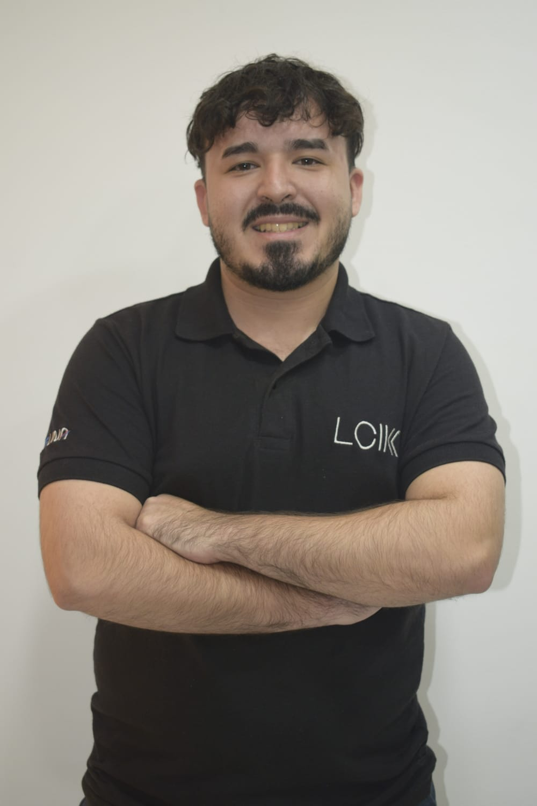
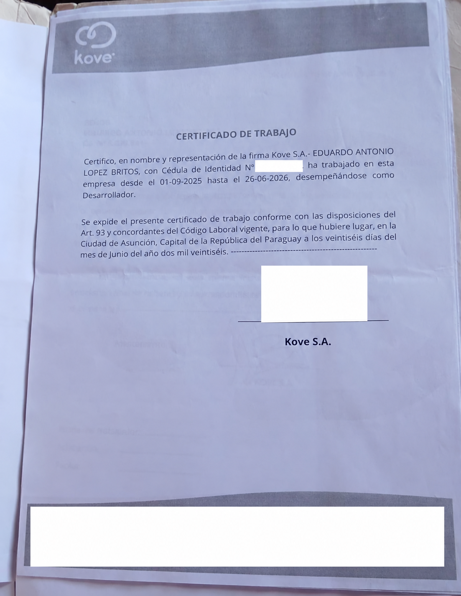
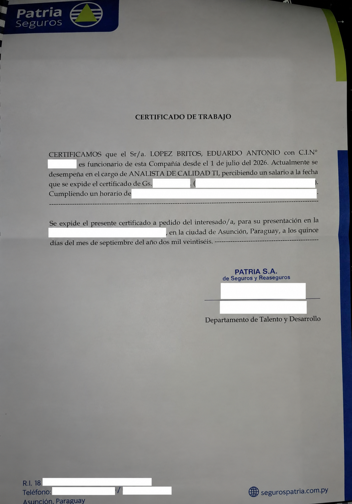

PORTAFOLIO PROFESIONAL · 2026
Eduardo
López.
Analista de Calidad TI · Desarrollo de Software
Conecto el análisis, la calidad y la tecnología para contribuir a sistemas más confiables y procesos más eficientes.
ENFOQUE PROFESIONAL
Calidad con
</>
Calidad con
visión técnica.
Analizar · Validar · Mejorar
Calidad TIPruebas e incidencias
CAPIATÁ, PARAGUAY
TECNOLOGÍA
✳CALIDAD
✳MEJORA CONTINUA
✳LIDERAZGO
IMÁGENES
Un poco más de mí.
Una mirada cercana a la persona detrás del perfil profesional.

01 / PERFIL
Una mirada integral
de la tecnología.
Soy estudiante de la Licenciatura en Ciencias Informáticas en la Facultad Politécnica de la Universidad Nacional de Asunción (FP-UNA), con experiencia en desarrollo de software y procesos empresariales.
Desde julio de 2026 trabajo como Analista de Calidad TI en Patria Seguros. Mi recorrido previo en KOVE S.A. incluye experiencia con Oracle APEX, PL/SQL, bases de datos Oracle y automatización de procesos empresariales. Esa combinación me permite acercarme a los sistemas desde la lógica de desarrollo y desde la atención a su calidad.
Durante el período 2026–2027 soy delegado de la carrera, una responsabilidad de representación estudiantil que acompaña mi formación. Me interesa seguir creciendo en calidad de software, desarrollo y mejora de procesos. Busco aportar criterio técnico, comunicación clara y disposición para aprender en equipos que construyen soluciones confiables y útiles para las personas.
En cursoLicenciatura en Ciencias Informáticas · FP-UNA
Julio 2026–ActualidadAnalista de Calidad TI · Patria Seguros
02 / PROPUESTA DE VALOR
Entender el sistema.
Mejorar la experiencia.
Combino experiencia en desarrollo y bases de datos con mi trabajo actual en calidad TI. Puedo comprender la lógica de una solución, revisar su comportamiento y comunicar hallazgos con foco en las necesidades de sus usuarios.
Mi diferencial está en conectar la mirada técnica con la calidad y la mejora continua.
03 / COMPETENCIAS
Herramientas para
aportar valor.
Competencias basadas en mi experiencia y formación actual.
Calidad de software
Pruebas de sistemas, validación de funcionalidades y análisis de incidencias.
Desarrollo y backend
Experiencia con Oracle APEX, PL/SQL y lógica de negocio en sistemas empresariales.
Bases de datos
Oracle Database, SQL, modelado relacional, constraints, triggers y automatización de procesos.
Liderazgo y comunicación
Representación estudiantil y participación en iniciativas vinculadas a la carrera.
FORMACIÓN COMPLEMENTARIA
Certificaciones
y cursos.
Credenciales y constancias con enlaces para consultarlas.
ORACLE
Oracle APEX Cloud Certified Developer Professional
Certificación profesional de desarrollo con Oracle APEX.
Emitida el 17 de septiembre de 2025
Ver certificación verificada ↗PROGRAMACIÓN
Curso de Python
Certificado compartido en Google Drive.
Ver certificado ↗BASES DE DATOS
Introducción a SQL
Certificado compartido en Google Drive.
Ver certificado ↗PROGRAMACIÓN
Introducción al lenguaje C
Certificado compartido en Google Drive.
Ver certificado ↗PROGRAMACIÓN
Introducción al lenguaje Java
Certificado compartido en Google Drive.
Ver certificado ↗04 / TRAYECTORIA
Experiencia y formación.
JUL 2026 — ACTUALIDAD
EXPERIENCIA PROFESIONAL
Analista de Calidad TI
Patria Seguros
- Realización de pruebas de sistemas.
- Validación de funcionalidades.
- Análisis de incidencias.
PERÍODO 2026 — 2027
LIDERAZGO ESTUDIANTIL
Delegado de carrera
Licenciatura en Ciencias Informáticas · FP-UNA
Representación estudiantil y participación en la coordinación de iniciativas de interés para la carrera. Los proyectos y resultados específicos se incorporarán a medida que estén documentados.
EXPERIENCIA ANTERIOR
EXPERIENCIA PROFESIONAL
Desarrollo Oracle APEX / PL/SQL
KOVE S.A.
- Experiencia en desarrollo con Oracle APEX y PL/SQL.
- Trabajo con bases de datos Oracle y automatización de procesos empresariales.
EN CURSO
FORMACIÓN ACADÉMICA
Licenciatura en Ciencias Informáticas
Facultad Politécnica · Universidad Nacional de Asunción
Formación universitaria en informática y desarrollo de competencias técnicas y profesionales.
05 / PROYECTOS Y EVIDENCIAS
La experiencia,
respaldada.
Dos experiencias laborales respaldadas por certificados. Por privacidad, no se publican las imágenes originales.
EXPERIENCIA ANTERIORDESARROLLO
SQL / PL·SQL
KOVE S.A.
Desarrollador · 1 de septiembre de 2025 al 26 de junio de 2026.
Ver qué acredita el certificado
Cargo: Desarrollador.
Período: septiembre de 2025 a junio de 2026.
Experiencia relacionada: Oracle APEX, PL/SQL, bases de datos Oracle y automatización de procesos empresariales.
Privacidad: se cubrieron cédula, firma y datos de contacto; el original se conserva fuera del sitio publicado.

EXPERIENCIA ACTUALCALIDAD TI
PATRIA
Patria Seguros
Analista de Calidad TI · desde el 1 de julio de 2026.
Ver qué acredita el certificado
Cargo: Analista de Calidad TI.
Período: desde julio de 2026.
Privacidad: se cubrieron cédula, salario, horario, destinatario, firma, datos de la persona firmante y contactos; el original se conserva fuera del sitio publicado.

Por confidencialidad, no se publican datos de clientes, información interna de sistemas ni materiales de la empresa sin autorización.
06 / PROYECCIÓN PROFESIONAL
Seguir aprendiendo.
Construir con propósito.
Mi objetivo es profundizar mis competencias en calidad de software y continuar desarrollándome en programación, bases de datos y automatización. Aspiro a integrar ambas perspectivas para contribuir al ciclo completo de construcción y mejora de soluciones tecnológicas.
Calidad de softwareDesarrollo backendMejora continua
07 / CONTACTO
¿Conectamos?
Estoy abierto a intercambiar ideas, aprender y explorar oportunidades relacionadas con tecnología, calidad y desarrollo de software.
Correo electrónicoeduardolopez9178@gmail.com ↗
LinkedInVer perfil profesional ↗
UbicaciónCapiatá, Paraguay